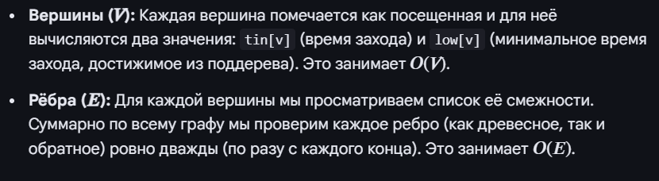
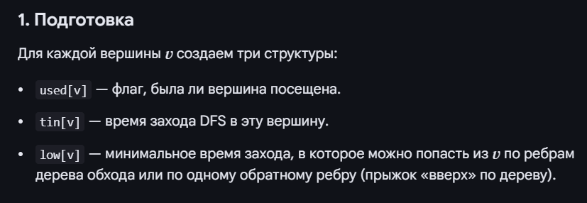
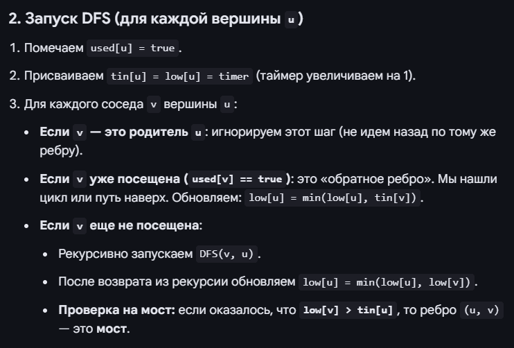
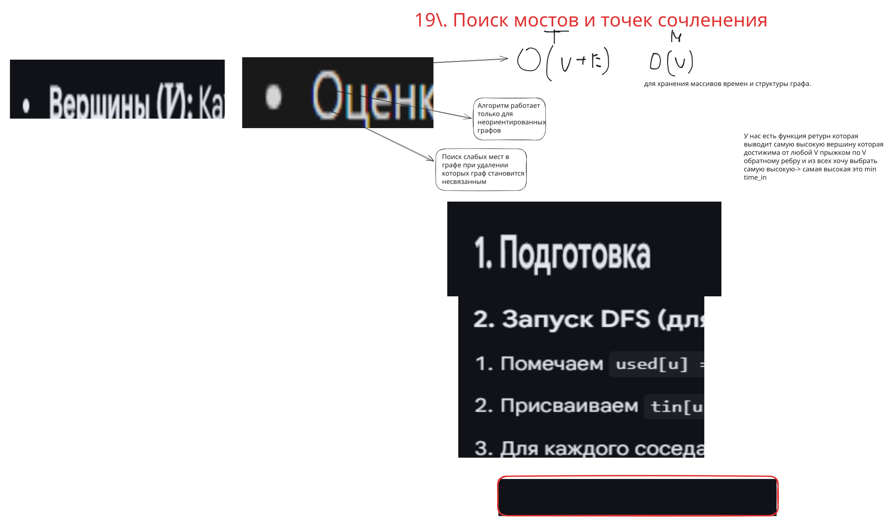
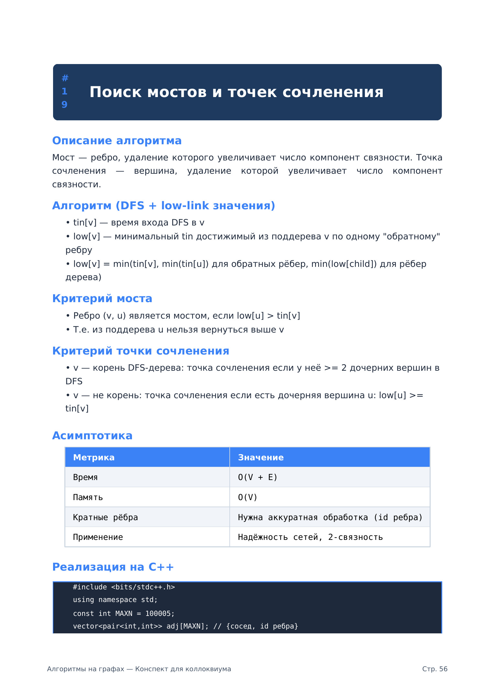
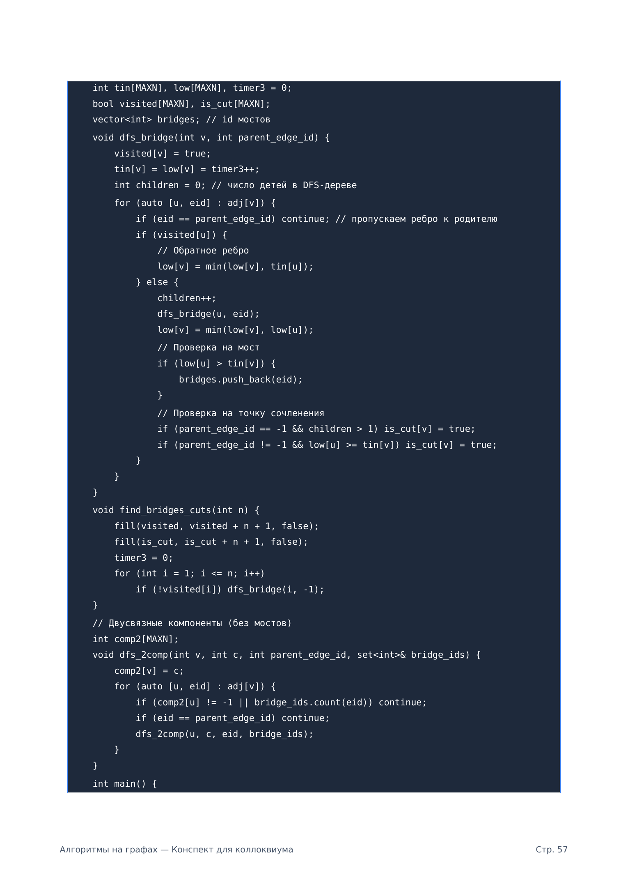
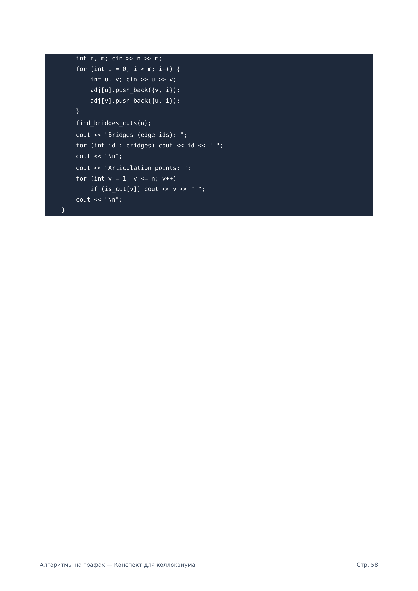

19. Мосты и точки сочленения
Эйлеров и гамильтонов циклы, диаметр дерева и времена DFS.
Материалы и примеры по пунктам
Поиск мостов и точек сочленения


для хранения массивов времен и структуры графа.
Алгоритм работает только для неориентированных графов
есть функция ретурн которая выводит самую высокую вершину которая достижима от любой V прыжком по V обратному ребру и из всех хочу выбрать самую высокую-> самая высокая это min time_in
Поиск слабых мест в графе при удалении которых граф становится несвязанным


Схемы и рукописные примеры

Страницы из PDF


